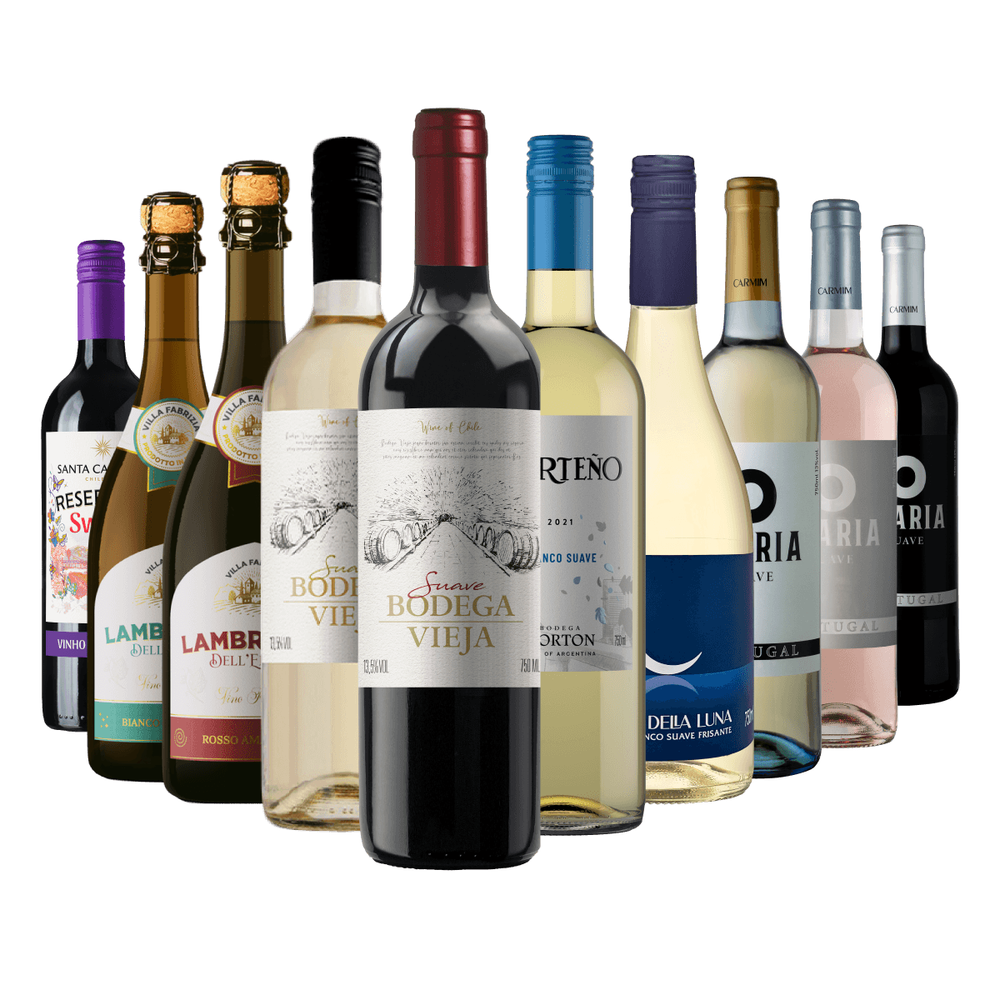
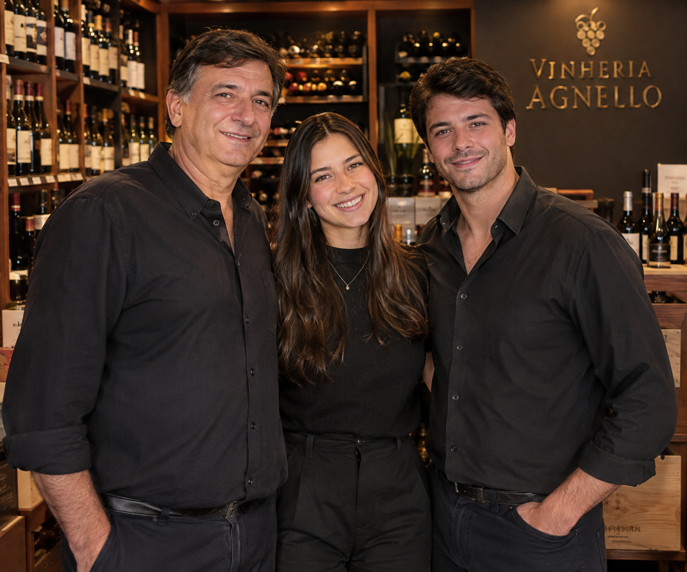

Sobre a Vinheria
A Vinheria Agnello é uma empresa familiar que atua há mais de 15 anos em São Paulo, oferecendo uma ampla variedade de rótulos de vinícolas nacionais e internacionais. Sob a direção de Giulio e sua filha Bianca, a vinheria tem como principal diferencial o atendimento personalizado. Nossa equipe possui amplo conhecimento sobre vinhos, uvas e regiões produtoras, ajudando cada cliente a encontrar a melhor opção para seu paladar, ocasião e refeição.
Sistema de Gerenciamento de Vinhos
Para facilitar sua gestão, a Vinheria Agnello utiliza um sistema integrado responsável pelo controle financeiro, compras, estoque e registro das vendas. Agora, a empresa também busca levar sua experiência para o ambiente digital, criando um e-commerce completo, intuitivo e próximo do atendimento da loja física.
Nossos Vinhos
Na Vinheria Agnello, você encontra uma grande variedade de rótulos nacionais e internacionais. Cada vinho possui características próprias, influenciadas pela uva, região, clima, solo e técnicas de produção. Para preservar sua qualidade, as garrafas são armazenadas com cuidados especiais contra luz, calor e movimentações.

Tradição que atravessa gerações
Há mais de 15 anos, a Vinheria Agnello transforma a paixão por vinhos em experiências únicas. Como uma empresa familiar, valorizamos o conhecimento, o cuidado e, principalmente, a proximidade com nossos clientes. Cada garrafa possui uma história, e nossa missão é ajudar você a encontrar o vinho ideal para cada momento, ocasião e refeição. Da nossa família para a sua, celebramos o prazer de compartilhar bons momentos à mesa.
